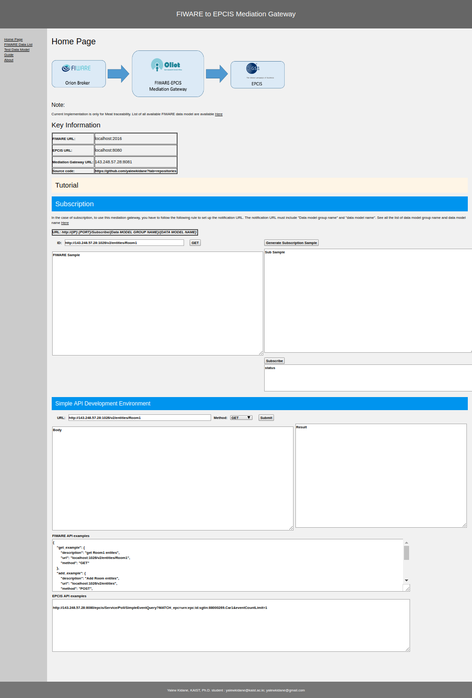
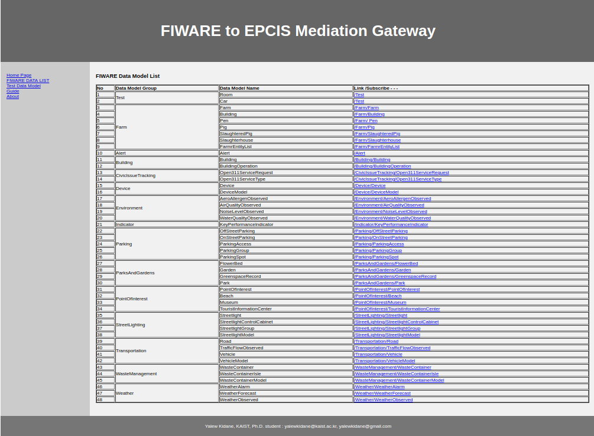

Install¶
Install FIWARE server¶
Use the following page to install FIWARE: FIWARE Install
Install EPCIS server¶
- Option 1:
- Make sure you have installed mongodb/mysql whichever you are using
- Download epcis war file from mediation github
- Download apache tomcat 8 from apchage page
- After extracting the apache tomcat file put the epcis war file in to path/to/your_tomcat_download/apache-tomact-8.x.xx/webapps
- On terminal go path/to/your_tomcat_download/apache-tomact-8.x.xx/bin/
- [for Linux] sh ./catalina.sh run
- [for Window] use .bat file
- Option 2:
- Follow the instruction the original EPCIS GitHub
Mediation gateway¶
A jar file is included in the github. To run the mediation gateway the following command can be used
java -jar path/to/the_jar_file/fiware_oiliot_mediation-1.0.0.jar
A ‘Dockerfile’ is also availble in the github jar file. The following code can be used build and run the mediation gateway
docker build -t fiware_oiliot_mediation .
docker run -p 8081:8081 fiware_oiliot_mediation
Provide the following information after you run the mediation gateway:
Enter FIWARE server URL (e.g localhost:2016) :
#localhost:1026
Enter FIWARE server URL (e.g localhost:8080) :
#localhost:8080
Mediation Gateway Port (e.g 8083):
#8081
Note
- After that, the mediation gateway will run and you can access the interface through any browser
localhost:Mediation_Gateway_Port/home
From the above example the url should be: localhost:8081/home
After that you will see the interfaces presented below
Main page {IP}:{PORT} /home
Fiware Data List {IP}:{PORT} /FiwareDataModel
